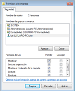

Cuando un usuario intenta acceder a un recurso, pide autorización al recurso para hacerlo. El recurso comprobará entonces si en su ACL aparece el SID del usuario, y en caso contrario, comprobará si en su ACL aparece el SID de algún grupo al que pertenezca el usuario.
{kind=link}
Si no aparece en la ACL ningún SID del usuario, el recurso niega el acceso al usuario.
Si aparece en la ACL algún SID del usuario, el recurso comprueba si la acción que quiere realizar el usuario (leer, borrar, escribir, etc.) está permitida para ese SID en su ACL, si lo está, le autoriza para hacerlo, en caso contrario se lo impide.
Puede ocurrir que un usuario tenga permisos contradictorios. Imagínate que en el ACL de una carpeta llamada EMPRESA aparece que el SID del usuario LUIS puede escribir en la carpeta, pero LUIS pertenece al grupo CONTABILIDAD que aparece en el ACL de empresa como que no tiene derecho a escribir. Bien, en este caso se aplica la siguiente regla:
- Lo que más pesa en cualquier ACL es la denegación implícita de permisos. Si un permiso esta denegado, no se sigue mirando, se deniega inmediatamente.
- Es suficiente con que un permiso esté concedido en cualquier SID para que se considere concedido. (A excepción de la regla 1, es decir, que no esté denegado implícitamente en ningún sitio).